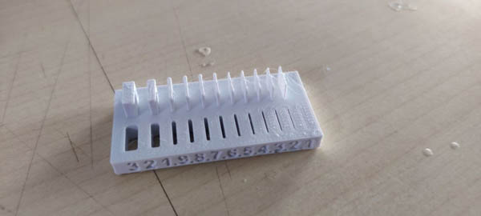

3D Printing
3D printing is one of the most accessible making processes out there. Although Lasercutting is my preferred method, ever since I got myself a Prusa, the sheer accesibility and ability to play with 3D modelling and printing is unparalleled.
Characterization
I downloaded a selection of stls from the FabAcademy page and prinnted them out on the Prusa.
The 5 primary properties I tested were
- Bridging
Upto 20 mm ling bridges are printing perfectly fine.
-
Unsupported angle Unsupported angles all the way down to 10 degrees look fine, while thumbrules say not too go beyond 45 degrees. I am very pleased to find this out, I will now print a lot more unsupported structures.
-
Unsupported Cantilever Unsupported cantilevers don't do that well, showing hanging strings from 2 mm onwards.
-
Printing widths  All negatives upto 0.1 mm print fine. Positives of 0.1 mm are lost but 0.2 mm and upwards are fine.
-
Clearances for in-place printing
Still printing.
Weekly Assignment
I love Math Art and Complex Geometry. It is one of the reasons I got into Coding as well.
I am making 2 models for this assignment.
The first is a fractal Menger Sponge, that I have coded in Processing.
The second is a modular interpenetrating surface that I am modelling in Fusion initially to understand it better, but I hope to move this to grasshopper for better control of the parameters.

A third non-subtractive application is 3D printed chain-mail, which I have modelled here in Fusion and printed out.